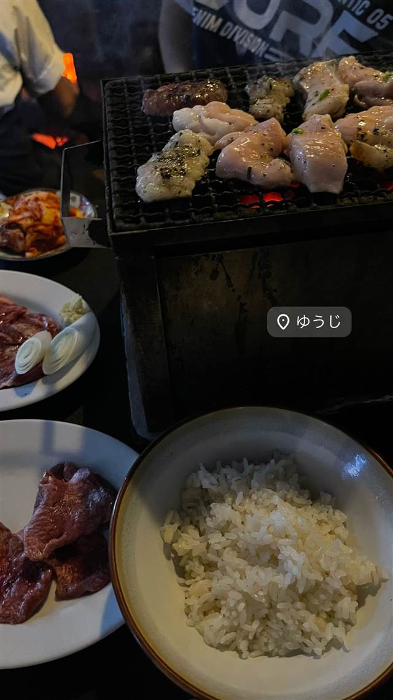

炭火焼 ゆうじ
赤坂の料亭で修行した店主が手がける、甘辛いタレのハツ
ゆうじ
渋谷・宇田川町にある炭火焼ホルモンの名店。小料理屋を営んでいた父の跡を継ぐ形で、赤坂の料亭で修行した店主が1991年に開業した。甘辛いタレのハツなど希少部位の質の高さで知られ、東京のホルモン屋として真っ先に名前が挙がる存在。
TRIVIA
豆知識
- 店主兄弟はともに赤坂の料亭で修行し、兄は割烹「樋口」を、弟がゆうじを営んでいる
- 東京で「ホルモン」と言えば真っ先に名前が挙がる店とされる
REVIEWS
世間の評判
4.20食べログ
ハツ刺しの質とコスパの高さ
- 新鮮なハツ刺しなどホルモンの質の高さを評価する声が非常に多い
- この質でこの価格かと驚くほどコスパの良さを高く評価する声が多い
- 店内が狭いうえに煙も多く、居心地には注意が必要という声がある
- 人気店のため予約が取りづらく電話がつながりにくいという声もある
食べログ 口コミ2376件
| 創業 | 1991年開業（2021年に開業30周年） |
|---|---|
| 看板 | 甘辛いタレのハツをはじめとするホルモン、もつ煮込み |
| こだわり | 炭火焼き。希少部位を含むホルモンの質の高さで知られる。 |
| どこから | 都心 |
| 営業時間 | 月〜土 16:00-23:00 日 休み |
| 予算 | 夜 ¥6,000～¥7,999 |
| 場所 | 渋谷 東京都渋谷区宇田川町 |
| メモ | 食べログ4点超えの人気店で予約困難。常連向けの裏メニュー的なコースがあり、初めては盛り合わせコースがおすすめ。店内は煙が立ち込めるほど。 |
食べたもの：焼肉
NEARBY
近い店・同じ系統の店
-
 ★
焼肉 白金高輪駅
炭焼 金竜山
ロンドン帰りの店主夫妻が焼く上タン塩とシャトーブリアン
夜 ¥20,000～¥29,999
★
焼肉 白金高輪駅
炭焼 金竜山
ロンドン帰りの店主夫妻が焼く上タン塩とシャトーブリアン
夜 ¥20,000～¥29,999
-
 ★
焼肉 関内駅
関内苑 本店
韓国職人仕込みのキムチとA5和牛の手打ち冷麺
昼 ¥1,000～¥1,999
★
焼肉 関内駅
関内苑 本店
韓国職人仕込みのキムチとA5和牛の手打ち冷麺
昼 ¥1,000～¥1,999
-
 ★
焼肉 鶯谷駅
焼肉 鶯谷園
1968年創業、半世紀以上続く良心価格の厚切りタン
夜 ¥6,000～¥7,999
★
焼肉 鶯谷駅
焼肉 鶯谷園
1968年創業、半世紀以上続く良心価格の厚切りタン
夜 ¥6,000～¥7,999
-
 ★
焼肉 不動前
焼肉しみず
牛タンの中心部だけを使う厚切り黒毛和牛タン
夜 ¥10,000～¥14,999
★
焼肉 不動前
焼肉しみず
牛タンの中心部だけを使う厚切り黒毛和牛タン
夜 ¥10,000～¥14,999
-
 ★
焼肉 飯田橋駅
好ちゃん 飯田橋本店
食べログ百名店に6年連続選出されたホルモン焼肉
夜 ¥6,000～¥7,999
★
焼肉 飯田橋駅
好ちゃん 飯田橋本店
食べログ百名店に6年連続選出されたホルモン焼肉
夜 ¥6,000～¥7,999
-
 ★
焼肉 町屋
正泰苑 総本店
ザガット東京焼肉部門1位に輝いた熟成タン
夜 ¥6,000～¥7,999
★
焼肉 町屋
正泰苑 総本店
ザガット東京焼肉部門1位に輝いた熟成タン
夜 ¥6,000～¥7,999